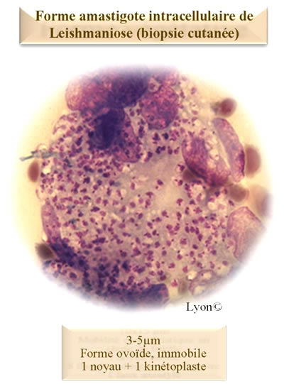

Protozoaires flagellés
- Ordre des
Kinétoplastidés
- Famille
des Trypanosomatidés
- Genre
Leishmania
- formes amastigotes : forme ovoïde immobile de 3-5µm qui
possède un noyau et un kinétoplaste. C’est une forme parasite
intracellulaire du système réticulo-endothéliale (SRE) des vertébrés.
- formes promastigotes : formes allongées mobiles de
10-20µm qui possède un noyau, un kinétoplaste et un flagelle. Cette forme,
présente chez le vecteur est le forme infestante pour l’hôte vertébré.
Instecte du genre Phlebotomus (ou Lutzomia)
Il est présent toute l’année en zone intertropicale,
l’été en région tempérée.
La femelle hématophage présente une activité
principalement crépusculaire et nocturne et sa piqûre est douloureuse.
Transmission par la piqûre infestante d’un insecte
vecteur : le phlébotome Inoculation de forme
promatigote à l’hôte vertébré Ces formes sont phagocytés par le SRE (monocytes,
macrophages …) et deviennent des formes
amastigotes qui survivent à la phagocytose et se multiplient.
La cellule est lysée et libèrent les formes amastigotes qui peuvent a leur
tour contaminer d’autres cellules du SRE
Le vecteur se contamine par ingestion de forme amastigote lors d’un repas
sanguin.
Le parasite se multiplie sous forme promastigote procyclique dans l’intestin de l’insecte et donne des
formes promastigotes métacycliques infestantes au niveau des trompes.
| Foyers | I | II | III |
| Réservoir | Animaux sauvages | Animaux domestiques (chien) | Homme |
| Cas humains | Rares | + | +++ |
| Zoonose | Anthropozoonose | Anthroponose |
Plusieurs espèces de Leishmanies ont été individualisées et peuvent être classées en fonction de leur répartition géographique et du type d’atteinte clinique qu’elles engendrent :
-
Ancien Monde :
-
L. major : foyer I, Asie, Moyen Orient, Afrique
-
L. tropica : foyer III, + bassin méditerranéen
- Nouveau Monde (Amérique Centrale et du Sud) : L.
amazonensis, L. guyanensis, L. mexicana, L. panamensis…
- Ancien Monde : L. aethiopica
- Nouveau Monde : L. amazonensis
(extension aux organes du SRE : foie, rate, ganglions, moelle osseuse) : L. braziliensis
L. infantum (pourtour méditerranéen, Amérique du Sud, Chine), L. donovani
Au niveau du pourtour méditerranéen, cette leishmaniose
est présente en Europe méridionale, en Afrique du nord, Au Proche et
Moyen-Orient.
En France, on la retrouve en Corse, dans le Languedoc, le Roussillon, les Cévennes, de Marseille jusqu’à la frontière italienne et au niveau de la rive gauche du Rhône jusqu’à la Drôme)
La leishmaniose viscérale à L.
infantum est une anthropozoonose où le réservoir de parasites est
constitué par les animaux domestiques (principalement le chien).
Le
phlébotome sert de vecteur entre l’animal atteint et l’homme.
Incubation moyenne : 3 à 6 mois
En zone d’endémie, l’infection est souvent
asymptomatique.
Elle peut rester quiescente pendant plusieurs années et
s’exprimer en cas d’apparition d’une immunodépression (VIH …)
On peut retrouver une fièvre anarchique, un
amaigrissement, pâleur intense, splénomégalie, hépatomégalie, adénopathies …
Syndrome inflammatoire :
augmentation de la VS, de la CRP, hypoalbuminémie, hypergammaglobulinémie
polyclonale (surtout IgG)
Hématologie : anémie,
leuconeutropénie, thrombopénie
Techniques de dépistage : IFI (Ag figurés : formes promastigotes
de L. infantum), ELISA (Ag solubles)
Les techniques sérologiques sont souvent faussement
négatives chez les sujets immunodéprimés.
On observe des réactions croisées avec les autres
parasites de la famille des Trypanosomatidés
Technique de confirmation (Western
Blot) : réalisée en cas de test de dépistage positif ou discordant.
Prélèvements :
- myélogramme (riche en parasite)
- sang prélevé sur EDTA (sensibilité limitée qui peut être améliorée
par une leucoconcentration)
- adénogramme (en cas d’adénopathie), examen splénique en cas de
splénectomie thérapeutique
Visualisation des formes amastigotes (noyau + kinétoplaste) par coloration de Giemsa ou MGG
Réalisée uniquement en laboratoire spécialisé.
Technique sensible qui permet de disposer de la souche
mais les délais de réponse sont longs
Milieu classique au sang de lapin ou milieu RPMI
enrichi de sérum de veau foetal Incubation 25 °C
Lecture (lame/lamelle) et repiquage 1 fois par semaine,
pendant 4 semaines : permet de visualiser les formes promastigotes
PCR de genre ou PCR d’espèce (très grande sensibilité, résultat rapide)
Majoration progressive des symptômes cliniques et des
signes biologiques : altération progressive de l’état général, infections
(du fait de la neutropénie)
Les syndromes hémorragiques (thrombopénie, diminution
des facteurs de la coagulation) et infectieux (neutropénies) sont
généralement responsables du décès du patient.
Présence de lésions en nombre variable (fonction du
nombre de piqûre) situées principalement sur les parties découvertes
(visage, bras, membres inférieurs).
Aspect de la lésion : ulcération centrale avec une
bordure inflammatoire (zone où l’on retrouve les leishmanies) qui évolue
avec la formation d’une croûte jusqu’à une guérison spontanée avec la
présence d’une cicatrice. (des formes sèches ou lupoïdes ont été décrites)
MemoBio©
Formes rares provoquées par les espèces L. aethiopica et L. amazonensis
Présence de nombreux nodules de petite taille sur
l’ensemble du corps qui confluent en larges plaques infiltrées
Cette forme est généralement rebelles aux
anti-leishmaniens classiques
Diagnostic
Prélèvement :
Traiter au préalable une éventuelle surinfection
Racler à la curette le versant interne de l’ulcération
en périphérie de la lésion, après ablation de la croûte, jusqu’à recueil
d’un liquide séro-hémorragique et réalisation d’un frottis
Faire une biopsie (punch), en prenant le pourtour de
l’ulcération et réaliser des appositions sur lame.
Examen direct, culture,
PCR Sérologie habituellement négative
Pathologie présente du sud du Mexique jusqu’au nord de l’Argentine provoquée par L. braziliensis (foyer I)
La symptomatologie est d’abord cutanée puis muqueuse avec l’apparition de mutilation défigurantes : nécrose des muqueuses nasale, buccale et du larynx
Lésion unique à L. major : abstention
thérapeutique possible
Lésions en petit nombre à L. tropica, L. major :
infiltrations périlésionnelles d’antimonié
Lésions multiples, périorificielles, diffusion
lymphatique, récidives : antimonié par voie générale, 20 j
Leishmaniose cutanée à L. braziliensis ,
leishmaniose cutanéo-muqueuse : antimonié par voie générale, 28 j
Leishmanioses cutanées diffuses : pentamidine à forte
dose